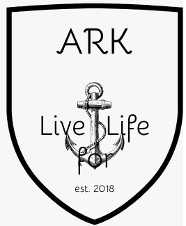

<link rel="import" href="../bower_components/polymer/polymer-element.html">
<link rel="import" href="../bower_components/iron-ajax/iron-ajax.html">
<link rel="import" href="../bower_components/paper-button/paper-button.html">
<link rel="import" href="../bower_components/app-route/app-location.html">
<link rel="import" href="shared-styles.html">

<dom-module id="home-page">
  <template>
    <style include="shared-styles"> 
      .content
      {
        padding: 15px;
      }
    </style>
    
    <brum-global-variable key="userData" value="{{storedUser}}"></brum-global-variable>
    <div class="flex flex--col content" style="margin:auto">
      <paper-button raised on-tap="_testButton" class="primary">Test</paper-button>      
      <div class="flex__item--middle"><h1>Bienvenue sur le site de l'Arche</h1></div>
      <div class="flex__item--middle"><h1>Veuillez vous connecter et naviguer via le menu qui apparaitra en haut à gauche</h1></div>
      <div class="flex__item--middle"><h1>Site en construction</h1></div>
      <div class="flex__item--middle"><h1></h1></div>
    </div>
  </div>
</template>

<script>
  class HomePage extends Polymer.Element {
    static get is() { return 'home-page'; }
    static get properties() { return 
    }
    ready()
    {
      super.ready();
      this._getUsers();
    }
    _getUsers(){
      this.tableUrl = '/maria/users';
    }
    _testButton(){
      console.log('stored user : ',this.storedUser);
    }
    _testButton2(){
      var date = new Date();
      console.log(date.getDate()+'/'+date.getMonth()+'/'+date.getFullYear()+' '+date.getUTCHours() + ':' + date.getUTCMinutes()+'');     
    }
  }
  window.customElements.define(HomePage.is, HomePage);
</script>
</dom-module>